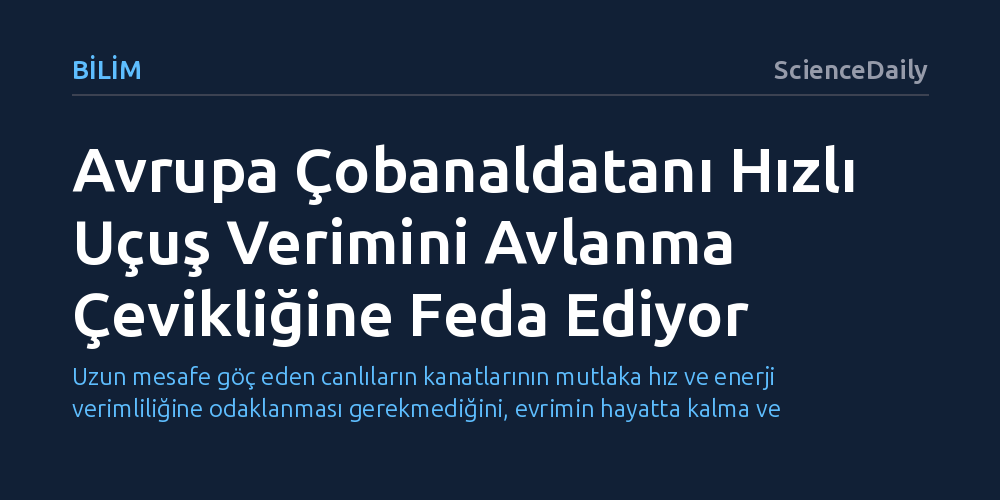

BILIM · ScienceDaily · 2026-10-18
Avrupa çobanaldatanı, binlerce kilometrelik göçüne rağmen kanatlarını yüksek hızda verimli uçuş yerine yavaş avlanma çevikliğine göre evrimleştirmiştir. Kuş ayrıca böcek ve yarasalardaki gibi kanatlarını yukarı kaldırırken de ileri itiş üretiyor.
Uzun mesafe göç eden canlıların kanatlarının mutlaka hız ve enerji verimliliğine odaklanması gerekmediğini, evrimin hayatta kalma ve avlanma çevikliği uğruna aerodinamik tavizler verebildiğini gösterir.

Avrupa çobanaldatanı (Caprimulgus europaeus), her yıl Avrupa ile güney Afrika arasında binlerce kilometrelik çetin bir göç yolculuğu gerçekleştiren gececi bir avcıdır. Yaygın bilimsel kabul, bu denli muazzam mesafeleri aşan göçmen kuşların kanat yapılarının yüksek hızda enerji tasarrufu ve aerodinamik verimlilik sağlayacak biçimde mükemmelleştiği yönündeydi. Ancak Lund Üniversitesi araştırmacıları, çobanaldatanın kanatlarının sanılanın aksine uzun mesafe hızına değil, tamamen farklı ve zorlu bir hayati gereksinime göre evrimleştiğini ortaya koydu.
Kuşun geniş kanat uçları, gece karanlığında alçak hızlarda uçuşan böcekleri avlayabilmek için keskin dönüşler ve ani manevralar yapmasını sağlıyor. Ancak rüzgâr tüneli ölçümleri, bu çevikliğin ağır bir aerodinamik bedeli olduğunu gösterdi: Kuş hızlandıkça kanatları havada tutunmayı sağlayan kaldırma kuvvetini çok daha düşük bir verimle üretiyor.
İsveç'teki Lund Üniversitesi araştırmacıları, çobanaldatanların bu ikili yaşam tarzına nasıl uyum sağladığını çözebilmek için kuşları kontrollü bir rüzgâr tünelinde farklı hızlarda uçurdu. Kuşların kanat çırpış hareketleri yüksek hızlı kameralarla kaydedilirken, kanatların arkasında bıraktığı hava akımı desenleri hassas optik yöntemlerle haritalandı.
Elde edilen aerodinamik veriler, kuş hızlandıkça geniş kanat uçlarının avantaj olmaktan çıkıp bir engele dönüştüğünü netleştirdi. Araştırma ekibinden Christoffer Johansson bu durumu, "Bu durum, uzun mesafe göçmenlerinin kusursuz biçimde optimize edilmiş birer uçuş makinesi olduğu yönündeki sezgisel tabloyla çelişiyor," sözleriyle özetliyor.
Deneyler sırasında araştırmacıları asıl hayrete düşüren nokta, kanadın yukarı kaldırıldığı evrede ortaya çıktı. Kuşlar olağan uçuş mekaniğinde kanatlarını aşağı indirirken ileri yönlü itiş kuvveti üretir; kanadı yukarı kaldırma hareketi ise genellikle pasif veya sadece havada tutunmaya yarayan bir geçiş evresi kabul edilir. Oysa çobanaldatan, kanatlarını yukarı kaldırırken de ileriye doğru itiş üretmeyi sürdürüyordu.
Bu sıra dışı mekanizma kuşlar arasında son derece nadirdir ve bugüne kadar temel olarak yarasaların ve bazı böceklerin uçuş mekaniğiyle ilişkilendirilmiştir. Kanatlarını gövdeye doğru fazla katlayamayan canlılar, bu yapısal kısıtı yukarı vuruşta aktif kuvvet üreterek telafi etmektedir. Farklı evrimsel kökenlere sahip canlıların benzer uçuş kısıtlamalarına aynı aerodinamik çözümü geliştirmesi, doğadaki yakınsak evrimin çarpıcı bir örneğini sunuyor.
Bu keşif, evrimin organları tek bir amaca kusursuz hizmet eden tasarımlar olarak değil, birbiriyle yarışan birden fazla ihtiyacı uzlaştıran dengeler olarak geliştirdiğini bir kez daha kanıtlıyor. Çobanaldatan örneğinde doğa, kıtalararası göç ile alçak hızda gece avcılığı arasında bir denge kurarak türün hayatta kalmasını güvence altına almıştır.
Elde edilen prensipler havacılık ve biyomimetik robotik teknolojileri açısından da heyecan verici olanaklar sunuyor. Özellikle çırpan kanatlı dronlar ve mikro hava araçları, mekanik sınırlamalar nedeniyle kanatlarını biyolojik kuşlar gibi kolayca büküp katlayamamaktadır. Çobanaldatanın yukarı çırpışta itiş üretme stratejisini taklit etmek, mühendislerin çok daha çevik ve verimli yeni nesil robotik uçaklar tasarlamasına rehberlik edebilir.